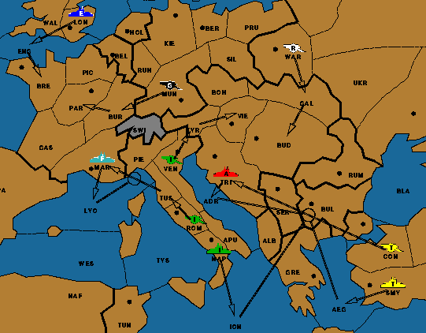

Eliminating Two Powers in Flexible Setup Diplomacy

... So we see that France and Austria are the only two powers which can both
be eliminated in 1901, and that Tuscany -- and no other Italian province --
contains a unit after the Spring movement! ...
 Back to the puzzle....
Back to the puzzle....
|